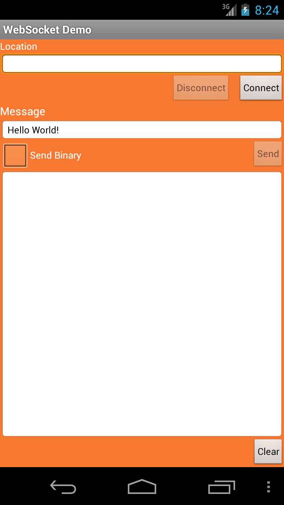

This procedure describes how you can use the Android Client API to create an Android client that connects to and sends and receives message from the Echo service running on the public Kaazing WebSocket Gateway at ws://echo.websocket.org. This API allows you to take advantage of the WebSocket standard as described in the HTML5 specification.
Create a WebSocket object and connect to a server:
wsFactory = WebSocketFactory.createWebSocketFactory();
ws = wsFactory.createWebSocket(URI.create("ws://example.com:8001/path"));
ws.connect(); // This will block or throw an exception if failed.
To send messages, add a WebSocketMessageWriter object:
WebSocketMessageWriter writer = ws.getMessageWriter();
String text = "Hello WebSocket!";
writer.writeText(text); // Send text message
To receive or consume messages, add WebSocket and WebSocketMessageReader objects:
wsFactory = WebSocketFactory.createWebSocketFactory();
ws = wsFactory.createWebSocket(URI.create("ws://example.com:8001/path"));
ws.connect(); // This will block or throw an exception if failed.
WebSocketMessageReader reader = ws.getMessageReader();
WebSocketMessageType type = null; // Block till a message arrives
// Loop till the connection goes away
while ((type = reader.next()) != WebSocketMessageType.EOS) {
switch (type) { // Handle both text and binary messages
case TEXT:
CharSequence text = reader.getText();
log("RECEIVED TEXT MESSAGE: " + text.toString());
break;
case BINARY:
ByteBuffer buffer = reader.getBinary();
log("RECEIVED BINARY MESSAGE: " + getHexDump(buffer));
break;
}
}
Note: The WebSocket connection is created for both the send and receive functions (ws.connect()). These examples are used because most clients will either send or receive messages. If your client both sends and receives messages, you would only need to create a single WebSocket connection.
Here is an example using a for loop to alternate between text and binary messages, and the code is placed within try catch blocks:
try {
// Create a new WebSocket object
wsFactory = WebSocketFactory.createWebSocketFactory();
ws = wsFactory.createWebSocket(URI.create("ws://example.com:8001/path"));
ws.connect(); // This will block or throw an exception if failed.
/* Use the WebSocketMessageWriter class method getMessageWriter()
to send text and binary messages */
WebSocketMessageWriter writer = ws.getMessageWriter();
// Send messages using a for loop to alternate between text and binary messages
for (int i = 0; i < 100; i++) {
String text = "Hello WebSocket - " + i;
// For even numbered loops, send text
if (( i %2) == 0) {
writer.writeText(text); // Send text message
}
else {
// For odd numbered loops, send binary
ByteBuffer buffer = ByteBuffer.wrap(text.getBytes());
writer.writeBinary(buffer); // Send binary message
}
}
ws.close();
}
catch (Exception ex) {
ex.printStackTrace();
}
Here is how to receive messages on the consumer side using a while loop and switch statement:
try {
// Create a new WebSocket object
wsFactory = WebSocketFactory.createWebSocketFactory();
ws = wsFactory.createWebSocket(URI.create("ws://example.com:8001/path"));
ws.connect(); // This will block or throw an exception if failed.
// Use the getMessageReader() method
WebSocketMessageReader reader = ws.getMessageReader();
WebSocketMessageType type = null; // Block until a message arrives
while ((type = reader.next()) != WebSocketMessageType.EOS) { // Loop until the connection is closed
switch (type) {
// Run if type is TEXT
case TEXT:
CharSequence text = reader.getText();
log("RECEIVED TEXT MESSAGE: " + text.toString());
break;
// Run if type is BINARY
case BINARY:
ByteBuffer buffer = reader.getBinary();
log("RECEIVED BINARY MESSAGE: " + getHexDump(data)); // see getHexDump() below
break;
}
}
ws.close();
}
catch (Exception ex){
ex.printStackTrace();
}
private String getHexDump(ByteBuffer buf) {
if (buf.position() == buf.limit()) {
return "empty";
}
StringBuilder hexDump = new StringBuilder();
for (int i = buf.position(); i < buf.limit(); i++) {
hexDump.append(Integer.toHexString(buf.get(i)&0xFF)).append(' ');
}
return hexDump.toString();
}
WebSocket and WsURLConnection
The Kaazing Gateway Android WebSocket API offers two options for creating and using WebSocket connections to enable developers to leverage their java.net Socket or URL experience:
WebSocket - this class and its methods are provided for developers familiar with the Socket class in the java.net package. It implements a socket for stream-based interprocess communication over the Web.
WsURLConnection - this class is an extension of the URLConnection class in the java.net package. It defines a network connection to an object specified by a URL. WsURLConnection adds WebSocket support to URLConnection, allowing you to create, connect and use WebSocket connections in addition to the default URLConnection subclasses HttpURLConnection and JarURLConnection. You can use all of the methods in URLConnection and the additional methods included in the WsURLConnection extension.
The WsURLConnection class is provided for developers accustomed to creating an URLConnection object and then using java.io.InputStream and java.io.OutputStream classes from java.io to receive and send data. The WsURLConnection extends URLConnection to enable you to use WebSocket-specific features and provide bidirectional communication.
The following example demonstrates how WsURLConnection enables you to create a URLConnection object for a WebSocket URL:
There are two important things to note in this example:
This example uses the URLFactory class which enables you to instantiate URL objects that support custom protocols and schemes, such as the WebSocket protocol’s ws:// and wss://. java.net.URL has native support for http, https, ftp, file, and jar protocols only.
The URLConnection object created in the example is an instance of the WsURLConnection class. Since getInputStream() and getOutputStream() methods are available on URLConnection, there was no need to downcast URLConnection to WsURLConnection. However, if you need to access methods that are not available on URLConnection, but are only available on WsURLConnection, you can downcast the urlConn object in the example and then invoke getMessageReader():
With WsURLConnection and URLFactory, you can continue to create URLConnection objects as you have previously and simply use WebSocket to take advantage of additional methods provided by WsURLConnection.
URLFactory
The URLFactory class is included to support custom protocols and schemes not supported by java.net.URL. Namely, the WebSocket protocol’s ws:// and wss:// schemes. java.net.URL supports http, https, ftp, file, and jar protocols only and the java.net.URLStreamHandlerFactory class registration is not extensible. After importing the URLFactory class, one of the createURL() methods is used to create a WebSocket URL object from either:
The String representation, by parsing the given specification within a specified context.
A specified protocol name, host name, and file name.
A specified protocol name, host name, port number, and file name.
For more information about the URLFactory class, see the Kaazing Gateway Java WebSocket API.
Setting and Overriding Defaults on the WebSocketFactory
You can set a default redirect-policy on the WebSocketFactory. All the WebSockets created using that factory automatically inherit the default. You can then override the defaults on an individual WebSocket, if desired. Unlike the HttpURLConnection in the Java SDK that uses the boolean InstanceFollowRedirects method to specify whether the WebSocket follows redirects automatically, the Kaazing Android WebSocket Client API also provides the following options:
Option
Description
NEVER
Do not follow HTTP redirects.
ALWAYS
Follow the HTTP redirect requests always, regardless of the origin, domain, etc.
SAME_ORIGIN
Follow the HTTP redirect only if the origin of the redirect request matches. This implies that both the scheme/protocol and the authority between the current and the redirect URIs should match. The port number should also be the same between the two URIs.
SAME_DOMAIN
Follow HTTP redirect only if the domain of the redirect request matches the domain of the current request. For example, URIs with identical domains would be ws://production.example.com:8001 and ws://production.example.com:8002.
PEER_DOMAIN
Follow the HTTP redirect only if the redirected request is for a peer-domain. For example, the domain in the URI ws://sales.example.com:8001 is a peer of the domain in the URI ws://marketing.example.com:8002.
SUB_DOMAIN
Follow the HTTP redirect only if the request is for sub-domain. For example, the domain in the URI ws://benefits.hr.example.com:8002 is a sub-domain of the domain in the URI ws://hr.example.com:8001.
You can set the default redirect option on the WebSocket Factory using the setDefaultRedirectPolicy() method and then override it on a WebSocket connection using the setRedirectPolicy() method.
Both the WebSocket and WsURLConnection classes offer methods to suit the data types your client will handle.
Text and Binary Clients
Clients using both text and binary messages can use the getMessageReader() and getMessageWriter() methods, available in both the WebSocket and WsURLConnection classes. These methods receive binary and text messages based on the WebSocketMessageType class. The WebSocketMessageType class represents the types of messages that are received by WebSocketMessageReader. There are three types: TEXT, BINARY, and EOS for end–of–stream. For receiving messages, you can use a switch block for the different message types:
Thread messageReceivingThread = new Thread() {
public void run() {
WebSocketMessageType type = null;
try {
WebSocketMessageReader reader = webSocket.getMessageReader();
while ((type = reader.next()) != WebSocketMessageType.EOS) {
switch (type) {
case BINARY:
ByteBuffer data = reader.getBinary();
log("RESPONSE:" + getHexDump(data));
break;
case TEXT:
CharSequence text = reader.getText();
log("RESPONSE:" + text.toString());
break;
}
}
webSocket.close()
}
catch (Exception ex) {
log("Exception: " + ex.getMessage());
}
}
};
Note: In UI-based Java clients, receiving messages should be done on a separate thread to avoid blocking the java.awt EventDispatchThread.
Text-only Clients
Text-only clients can use the getReader() and getWriter() methods, available in both the WebSocket and WsURLConnection classes. If either method is used to receive binary messages, or the methods are invoked before a connection is made, then an IOException is thrown.
Binary-only Clients and I/O Streams
Both WebSocket and WsURLConnection classes support APIs that enable use the use of byte-based data streams as they define getInputStream() and getOutputStream() methods. getInputStream() is used for receiving binary streams and getOutputStream() is used to send binary streams. If either method is used to receive text messages, or the methods are invoked before a connection is made, then an IOException is thrown. Once the connection is closed, a new InputStream or OutputStream must be obtained using the getInputStream() and OutputStream() methods after the connection has been established. Using the old InputStream or OutputStream will result in IOException.
Build the Android Client API WebSocket Demo
The following procedure walks through the steps of creating the Kaazing Android WebSocket Tutorial app that can be downloaded here https://github.com/kaazing/java.client.tutorials/tree/develop/android/ws. The tutorial code displays how to use the Android Client API to create a client that creates a WebSocket connection with the Gateway and sends and receives text and binary messages.
In this procedure you will build an Android WebSocket Client by doing the following:
In Configure your new project, in Application Name, name the project ws.
In Company Name, enter mycompany.example.com.
In Package Name, click Edit, enter com.kaazing.ws.client.demo, and click Done.
In Project location, enter or browse to a location for your project. The location path cannot contain spaces.
Click Next.
In Select the form factors your app will run on, enable Phone and Tablet.
In Minimum SDK, choose API 19: Android 4.4 (KitKat) and click Next.
Note: To confirm or modify the SDK requirement on a project, right-click the project, and click Properties. Click Android, and then look at the Project Build Target settings.
On Add an Activity to Mobile, click Empty Activity, and click Next.
In Customize the Activity, in Activity Name, enter EchoActivity.
In Layout Name enter main (ensure that the Activity Name is still EchoActivity) and click Finish. If there are dependencies that you need to install, the Finish button is not available. The new project is generated.
Import the Kaazing Android WebSocket SDK libraries. You can import the libraries in a number ways, such as using a .zip or Maven, as described on kaazing.com/download. Follow the steps for the method you want to use.
Here is an example app/build.gradle configuration:
Update the AndroidManifest.xml file. Open the AndroidManifest.xml file in app/src/main/AndroidManifest.xml and replace its contents with the following (the code is available here also):
Add the icon for the app. This is the icon that appears on the home screen of the device. Drag the icon from the Android demo folder java.client.tutorials/android/ws/res/drawable-hdpi/icon.png to the drawable-hdpi folder in your project at app/src/main/res/drawable-hdpi.
Delete the automatically generated styles.xml file in your project at app/src/main/res/values. This file isn't needed in the project and can cause errors.
Create the Android client Touch User Interface (TUI). Next you will add the text strings and layout for the Android client TUI. When you are finished, the Android client will look like this:

Figure: Android Client TUI
Open the strings.xml file located at app/src/main/res/values/strings.xml and replace its contents with the following:
You can see all of the buttons that will be displayed in the TUI.
Important: When pasting text into Android Studio, whitespace will likely be included and cause errors in your project. To avoid this problem, you can paste text into a text editor first, copy it from there, and paste it into Android Studio. Alternatively, you can copy the text from the files stored in Github here: https://github.com/kaazing/java.client.tutorials/tree/develop/android/ws.
Open the dimens.xml file from app/src/main/res/values/dimens.xml and replace its contents with the following:
You will see some errors, but these will go away once more code is added to the project.
Add a dispatch queue class to the Android client.
A dispatch queue class is used to run tasks in a separate thread from the main thread (to run some tasks asynchronously). The dispatch queue class is used to add Runnable in a queue. Runnable will be run in a first-in first-out basis. This dispatch queue class is useful to run a series of tasks sequentially in a separate thread from the main thread of the Android client. All of the blocking calls of the Android client will be run in a background thread so that the TUI is not blocked and can remain responsive.
In app/src/main/java, right-click the package com.kaazing.ws.client.demo, click New, and click Class.
In Name enter DispatchQueue and click Finish. The new DispatchQueue.java class is added to the src folder.
Double-click DispatchQueue.java.
Replace the contents with the following code:
package com.kaazing.ws.client.demo;
import android.os.Handler;
import android.os.HandlerThread;
public class DispatchQueue extends HandlerThread {
private Handler handler;
public DispatchQueue(String name) {
super(name);
}
// The message blocks until the thread is started. This should be called
// after call to start() to ensure the thread is ready.
public void waitUntilReady() {
handler = new Handler(getLooper());
}
// Adds the Runnable to the message queue which will be run on the thread.
// The runnable will be run in a first-in first-out basis.
public void dispatchAsync(Runnable task) {
handler.post(task);
}
public void removePendingJobs() {
handler.removeCallbacksAndMessages(null);
}
}
Modify the main class for the Android client. In the app/src/main/java/com.kaazing.ws.client.demo folder for the project, double-click EchoActivity.java. You will add the main Java code for the Android client in this file.
Delete all of the contents except the package com.kaazing.ws.client.demo package declaration and the EchoActivity class declaration:
package com.kaazing.ws.client.demo;
// Import statements will go here
public class EchoActivity extends FragmentActivity {
// the remaining code will go here
}
Add the import statements for the common Java and Android classes directly after the package com.kaazing.ws.client.demo package declaration:
Add the import statements for the Kaazing Gateway Android Client API classes that will be used in the client:
// Include these statements with any client
import com.kaazing.net.ws.WebSocket;
import com.kaazing.net.ws.WebSocketFactory;
import com.kaazing.net.ws.WebSocketMessageReader;
import com.kaazing.net.ws.WebSocketMessageType;
import com.kaazing.net.ws.WebSocketMessageWriter;
// Include these statements when a client must authenticate with the Gateway
import com.kaazing.net.auth.BasicChallengeHandler;
import com.kaazing.net.auth.ChallengeHandler;
import com.kaazing.net.auth.LoginHandler;
Under the // the remaining code will go here comment directly after the EchoActivity class declaration, add the variables for the program, and a method for hiding the keyboard since the app will be pre-loaded with a URL:
Add the onCreate() method with event listeners for the Connect, Send, Disconnect, and Clear buttons. This is a long method that includes event listeners for user interactions (clicks), and defines the program’s actions in response to when the user clicks the Connect, Send, Disconnect, and Clear buttons.
// Called when the activity is first created.
@Override
public void onCreate(Bundle savedInstanceState) {
super.onCreate(savedInstanceState);
setContentView(R.layout.main);
// Add values to the variables
location = (TextView)findViewById(R.id.locationText);
message = (TextView)findViewById(R.id.messageText);
log = (TextView)findViewById(R.id.log);
sendBtn = (Button)findViewById(R.id.send);
connectBtn = (Button)findViewById(R.id.connect);
disconnectBtn = (Button)findViewById(R.id.disconnect);
clearBtn = (Button)findViewById(R.id.clear);
sendBinaryCheckBox = (CheckBox)findViewById(R.id.sendBinaryCheckBox);
locationText.addTextChangedListener(new TextWatcher() {
@Override
public void beforeTextChanged(CharSequence s, int start, int count, int after) {
}
@Override
public void onTextChanged(CharSequence s, int start, int before, int count) {
String url= locationText.getText().toString();
if (url.length()>0){
connectBtn.setEnabled(true);
}
else{
connectBtn.setEnabled(false);
}
}
@Override
public void afterTextChanged(Editable s) {
}
});
// Run when the Connect button is clicked
connectBtn.setOnClickListener(new OnClickListener() {
public void onClick(View v) {
connectBtn.setEnabled(false);
// call the connect() method in the MessageReceiver class
connect();
}
});
// Run when the Send button is clicked
sendBtn.setOnClickListener(new OnClickListener() {
public void onClick(View v) {
final boolean sendBinary = sendBinaryCheckBox.isChecked();
// Run as part of the dispatch queue in DispatchQueue.java
// Receive messages in a separate thread
dispatchQueue.dispatchAsync(new Runnable() {
public void run() {
try {
WebSocketMessageWriter messageWriter = webSocket.getMessageWriter();
if (sendBinary) {
String messageToSend = message.getText().toString();
ByteBuffer payload = ByteBuffer.wrap(messageToSend.getBytes());
logMessage("SEND BINARY:" + getHexDump(payload));
messageWriter.writeBinary(payload);
}
else {
logMessage("SEND: " + message.getText());
messageWriter.writeText(message.getText());
}
} catch (Exception e) {
e.printStackTrace();
logMessage(e.getMessage());
}
}
});
}
});
// Run when the Disconnect button is clicked,
// and call the disconnect() method in the MessageReceiver class.
disconnectBtn.setOnClickListener(new OnClickListener() {
public void onClick(View v) {
disconnect();
}
});
// Run when the Clear button is clicked, and clear the log.
clearBtn.setOnClickListener(new OnClickListener() {
public void onClick(View v) {
log.setText("");
}
});
}
This sendBtn.setOnClickListener() event listener gets the text submitted by the user using message.getText() and then uses the WebSocketMessageWriter class to send the text message to the Gateway using the writeText() method. An instance of the WebSocketMessageWriter class is obtained by invoking the getMessageWriter() method on WebSocket. Once the WebSocket connection is closed, a new WebSocketMessageReader should be obtained after the connection has been established. Using the old reader will result in IOException.
Add the MessageReceiver that uses the WebSocketMessageReader to receive binary and text messages:
private class MessageReceiver implements Runnable { // run this in the background thread
// Use WebSocketMessageReader to receive binary
// and text messages
private WebSocketMessageReader messageReader;
private MessageReceiver(WebSocketMessageReader reader) {
this.messageReader = reader;
}
public void run() {
WebSocketMessageType type = null;
try {
// The next() method returns the type of the received message.
// Returns TEXT, BINARY, and EOS if the connection is closed.
while ((type = messageReader.next()) != WebSocketMessageType.EOS) {
switch (type) {
case BINARY:
// getBinary() returns the payload as a CharSequence.
// Place sequence in a byte buffer, and send it to
// getHexDump() to be converted into hexadecimal and
// then ASCII characters for output.
// getHexDump() is defined later in this client.
ByteBuffer data = messageReader.getBinary();
logMessage("RECEIVED: " + getHexDump(data));
break;
case TEXT:
// readText() returns the payload as a CharSequence
CharSequence text = messageReader.getText();
logMessage("RECEIVED: " + text.toString());
break;
}
}
if (!closedExplicitly) {
// Connection got closed due to either of the cases
// - Server closing the connection because of authentication timeout
// - network failure
webSocket = null;
logMessage("Connection Closed!!");
updateButtonsForDisconnected(); // disable Disconnect button
}
}
catch (Exception ex) {
ex.printStackTrace();
logMessage(ex.getMessage());
}
}
}
Add the getHexDump() method used when receiving binary messages as defined in MessageReceiver:
private String getHexDump(ByteBuffer buf) {
if (buf.position() == buf.limit()) {
return "empty";
}
StringBuilder hexDump = new StringBuilder();
for (int i = buf.position(); i < buf.limit(); i++) {
hexDump.append(Integer.toHexString(buf.get(i)&0xFF)).append(' ');
}
return hexDump.toString();
}
Add the connect() to connect to the Gateway and receive messages. This method defines the parameters of the WebSocket connection (lines 21-22), connects to the Gateway (line 29), and define how received messages are handled (lines 33). Note the use of a try catch block. A try catch block is the recommended method for connections in order to catch any exceptions (lines 42-44).
private void connect() {
closedExplicitly = false;
logMessage("CONNECTING");
// Initialize dispatch queue that will be used to run
// Blocking calls asynchronously on a separate thread
dispatchQueue = new DispatchQueue("Async Dispatch Queue");
dispatchQueue.start();
dispatchQueue.waitUntilReady();
// Since WebSocket.connect() is a blocking method that will not return until
// the connection is established or connection fails, it is a good practice to
// establish the connection on a separate thread and prevent the TUI from being blocked.
dispatchQueue.dispatchAsync(new Runnable() {
public void run() {
try {
WebSocketFactory webSocketFactory =
WebSocketFactory.createWebSocketFactory();
// Create the WebSocket connection using the target location
webSocket = webSocketFactory.createWebSocket(
URI.create(location.getText().toString()));
// Connect with the server using an endpoint.
// The thread invoking this method will be blocked until
// a successful connection is established. If the connection
// cannot be established, then an IOException is thrown
// and the thread is unblocked.
webSocket.connect();
logMessage("CONNECTED");
// Call the messageReceiver() method in the MessageReceiver class
WebSocketMessageReader messageReader = webSocket.getMessageReader();
MessageReceiver messageReceiver = new MessageReceiver(messageReader);
// Receive messages as a separate thread
new Thread(messageReceiver).start();
// Change button state to reflect connection status
updateButtonsForConnected();
} catch (Exception e) {
updateButtonsForDisconnected();
logMessage(e.getMessage());
dispatchQueue.quit();
}
}
});
}
Add the disconnect() method called when a user clicks the Disconnect button.
private void disconnect() {
closedExplicitly = true;
disconnectBtn.setEnabled(false);
logMessage("DISCONNECTING");
dispatchQueue.removePendingJobs();
dispatchQueue.quit();
// Run this as a new thread
new Thread(new Runnable() {
public void run() {
try {
// Close the WebSocket connection
webSocket.close();
logMessage("DISCONNECTED");
} catch (IOException e) {
logMessage(e.getMessage());
}
finally {
webSocket = null;
// Update buttons with connection status
updateButtonsForDisconnected();
}
}
}).start();
}
Add the methods for when the client is paused, resumes, and when an activity is finished.
Add onPause() method to disconnect the WebSocket connection when the client is paused on the device.
public void onPause() {
if (webSocket != null) {
wasConnectedBeforePaused = true;
disconnect();
}
super.onPause();
}
Add the onResume() method to connect the client when it is resumed from a paused state.
public void onResume() {
if (wasConnectedBeforePaused) {
wasConnectedBeforePaused = false;
connect();
}
super.onResume();
}
Add the onDestroy() method to perform any final cleanup before an activity is finished.
public void onDestroy() {
if (webSocket != null) {
disconnect();
}
super.onDestroy();
}
Add the methods for updating buttons according to the state of the WebSocket connection. The updateButtonsForConnected() method updates buttons for an active WebSocket connection and the updateButtonsForDisconnected() method updates buttons for an inactive connection.
Run the Android client in the Android Emulator. Click the Run arrow, select or create a Deployment Target (with a minimum API 19: Android 4.4), and click OK.
Note: The Android Emulator can be slow and resource intensive. Another option for running Android apps on your computer is Genymotion.
Figure: The Android Client in the Android Emulator
Test the Android client in the Android Emulator.
In the Android client running in the Android Emulator, in Location, enter ws://echo.websocket.org.
Click Connect. The messages CONNECTING and then CONNECTED appear. The WebSocket connection was successful.
Click Send. The message Hello World! is sent to the Echo service over WebSocket and the message is echoed back as Hello World!.
Click the Send Binary checkbox and click Send again. The message Hello World! is sent to the Echo service over WebSocket as binary and is echoed back as: RECEIVED: 48 65 6c 6c 6f 2c 20 57 65 62 53 6f 63 6b 65 74 21
SEND BINARY: 48 65 6c 6c 6f 2c 20 57 65 62 53 6f 63 6b 65 74 21
To test the Android client on an Android device, see the Android Studio documentation, Run Apps on a Hardware Device.